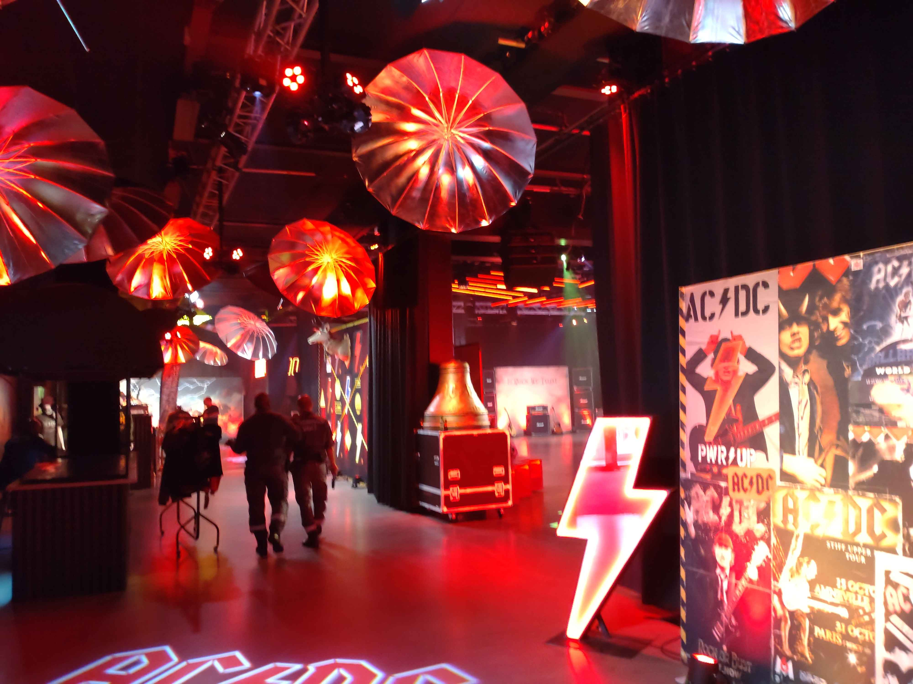
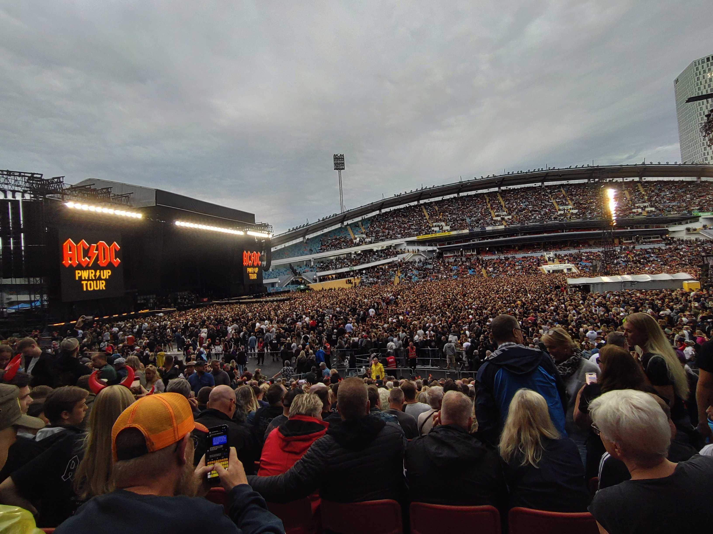
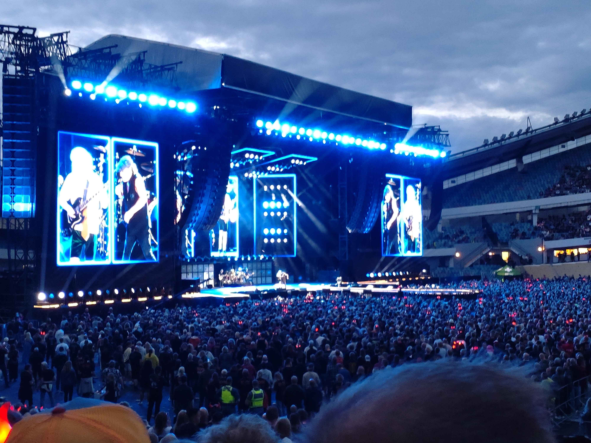

MIN SOMMARBERÄTTELSE
Det absolut tråkigaste jag gjort i sommar var att fara till stugan ofrivilligt och äta körv, men jag har också gjort en rolig grej och det var att far till Göteborg och se AC/DC spela live.
  Jag har badat 2 gånger och det kändes nice, poolen var inte iskall.
Det godaste jag åt i somras var en vesuvio pizza och jag skulle jämföra smaken med en kebabrulle.
En film som jag upptäckte i somras var "Johnny English Reborn" och den skulle jag vilja rekommendera till alla som gillar brittisk-action-comedy.
Vid ett tillfälle i somras åkte jag till Umeå, där var det både en massa butiker och trevligt folk.
Jag skulle vlija sammanfatta min sommar med tre ord: snabb och rolig.
En helt okej sommar men nog har jag allt längtat efter att jag ska få börja skolan igen och tror att detta år på NTI kommer att bli en minnesvärdig upplevelse.